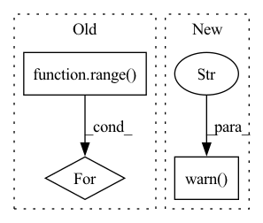

Pattern ID :257
Before Change
num_workers=self.num_data_loader_workers)
final_thetas = []
for _ in range( n_samples):
with torch.no_grad():
collect_theta = []
for batch_samples in loader:
// batch_size x vocab_sizeAfter Change
:param dataset: a PyTorch Dataset containing the documents
:param n_samples: the number of sample to collect to estimate the final distribution (the more the better).
warnings.warn("Call to `get_thetas` is deprecated and will be removed in version 2, "
"use `get_doc_topic_distribution` instead" ,
DeprecationWarning)
return self.get_doc_topic_distribution(dataset, n_samples=n_samples)
def get_doc_topic_distribution(self, dataset, n_samples=20):
In pattern: SUPERPATTERN
Frequency: 3
Non-data size: 3
Instances Fragment ID: 1957509
Project Name: milanlproc/contextualized-topic-models
Commit Name: 9b1adf7ec2f171993316f8f309f32c50c6ce97bb
Time: 2020-12-10
Author: s.terragni4@campus.unimib.it
File Name: contextualized_topic_models/models/ctm.py
M Class Name: CTM
N Class Name: CTM
M Method Name: get_thetas(3)
N Method Name: get_thetas(3)
M Parent Class: object
N Parent Class: object
M File Name: contextualized_topic_models/models/ctm.py
N File Name: contextualized_topic_models/models/ctm.py
M Start Line: 252
M End Line: 278
N Start Line: 251
N End Line: 254
Before Change
assert env.num_envs == 1, "You must pass only one environment when using this function"
episode_rewards, episode_lengths = [], []
for i in range( n_eval_episodes):
// Avoid double reset, as VecEnv are reset automatically
if not isinstance(env, VecEnv) or i == 0:
obs = env.reset()
done, state = False, None
episode_reward = 0.0After Change
is_monitor_wrapped = is_wrapped(env, Monitor)
if not is_monitor_wrapped and warn:
warnings.warn(
"Evaluation environment is not wrapped with a ``Monitor`` wrapper. "
"This may result in reporting modified episode lengths and rewards, if other wrappers happen to modify these. "
"Consider wrapping environment first with ``Monitor`` wrapper." ,
UserWarning,
)
episode_rewards, episode_lengths = [], []
not_reseted = True
while len(episode_rewards) < n_eval_episodes: Fragment ID: 1957510
Project Name: dlr-rm/stable-baselines3
Commit Name: 18d10dbf42dd6dff6d457b45b521fdf2a1169a7e
Time: 2020-11-16
Author: kaneran21@hotmail.com
File Name: stable_baselines3/common/evaluation.py
M Class Name: AnonimousClass
N Class Name: AnonimousClass
M Method Name: evaluate_policy(9)
N Method Name: evaluate_policy(8)
M Parent Class:
N Parent Class:
M File Name: stable_baselines3/common/evaluation.py
N File Name: stable_baselines3/common/evaluation.py
M Start Line: 43
M End Line: 61
N Start Line: 20
N End Line: 108
Before Change
text_column: template.format(label_name),
label_column: label_vector if multi_label else label_id,
}
for _ in range( sample_size):
dataset = dataset.add_item(example)
return dataset
After Change
def add_templated_examples(*args, **kwargs) -> None:
warnings.warn(
"`add_templated_examples` has been deprecated and will be removed in v1.0.0 of SetFit. "
" Please use `get_templated_dataset` instead." ,
DeprecationWarning,
stacklevel=2,
)
def get_candidate_labels(dataset_name: str, label_names_column: str = "label_text") -> List[str]:
dataset = load_dataset(dataset_name, split="train") Fragment ID: 1957507
Project Name: huggingface/setfit
Commit Name: b90fdc522fe2f3f48d4c93c01693349ad45780e7
Time: 2023-02-07
Author: daniel.korat@intel.com
File Name: src/setfit/data.py
M Class Name: AnonimousClass
N Class Name: AnonimousClass
M Method Name: add_templated_examples(0)
N Method Name: add_templated_examples(7)
M Parent Class:
N Parent Class:
M File Name: src/setfit/data.py
N File Name: src/setfit/data.py
M Start Line: 158
M End Line: 217
N Start Line: 114
N End Line: 119